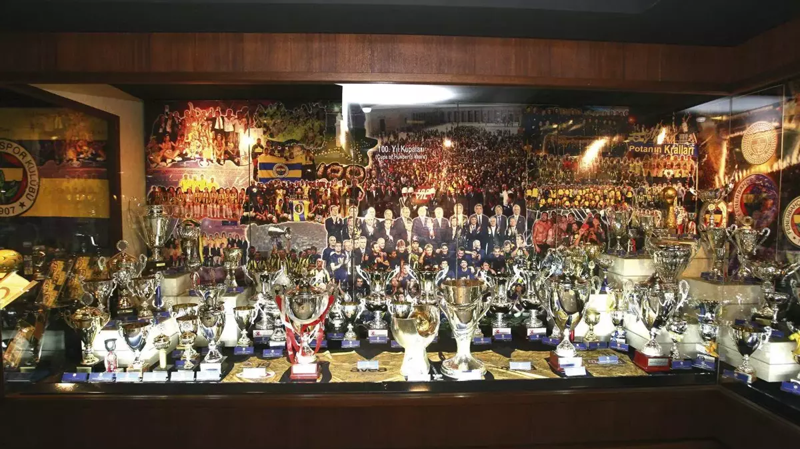
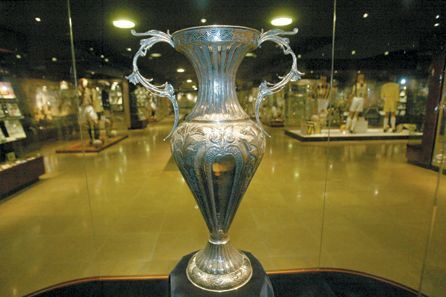
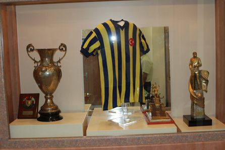

Fenerbahçe Spor Kulübü, 1907 yılında Kadıköy'de Nurizade Ziya Songülen, Ayetullah Bey ve Necip Okaner tarafından gizli bir şekilde kurulmuştur. Kuruluş amacı, o dönemde yabancıların tekelinde olan futbolda Türk gençlerine spor yapma imkanı sağlamaktı. Özellikle İstanbul'un işgali yıllarında Anadolu'ya silah kaçırılmasına öncülük eden kulüp, oynadığı maçlarla da halka büyük bir moral kaynağı olmuştur. Kulübün ilk renkleri sarı-beyaz olsa da, 1910 yılında efsanevi sarı-lacivert renklerini almıştır.
Kulüp şanlı tarihindeki önemli anıları ve kupaları müzesinde sergilemektedir. Müze, İstanbul Kadıköy'deki Şükrü Saracoğlu Stadyumu'nun (Chobani Stadyumu) Maraton Tribünü girişinde yer almaktadır.

İşte müzemizden bazı tarihi kareler:

1923 yılında İngiliz işgal kuvvetleri takımıyla oynanan ve kazanılan tarihi maçın kupasıdır.

Fenerbahçe'nin efsanevi sarı-lacivert çubuklu formasının müzede sergilenen tarihi örneklerinden biri.